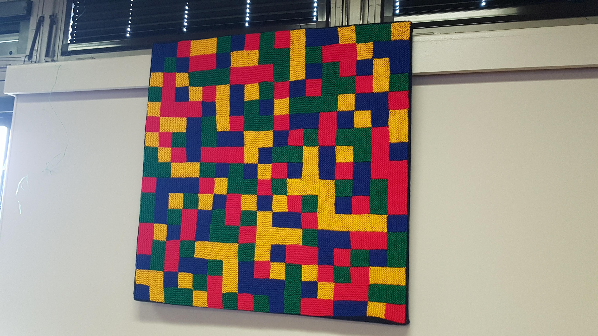

So, it's time for another one of my monologues about places I have been, this time it's MathsJam Annual Gathering.
The MathsJam Annual Gathering is an event held by Colin Wright for recreational Mathematicians of all walks of Life
and of all levels. It's mainly based around talks and people bringing things to show, I took my olympiad booklets and
my code to show.
I left on Friday, for the North, suprisingly scared of what I would face but with my bright eye, bushy tailed approach I give
to everything, really not knowing how I'd get to Yarnfield Park from Stone, so I hoped there'd be people doing the shuttle service.
For details on the train journey, I shall point you to the newly installed ℵ
n ∀ n∈ ℕ. So we shall fast forward to when I arrived at Stone, I got off the platform, and met a group
of what looked like Mathematicians due to their baggage, so I shyly asked: "Are you here for the MathsJam?", to which they loudly replied
"Of Course!" in recieved prenounciation, at this point, I knew I came to the right event.

After some small talk on our way to MathsJam, I was greeted by Colin, then I went and dropped my stuff at my room and then went back to talk
to people. Firstly I was earmarked by the delightful Pat, to which I ended up spilling all the beans about who I looked up to and who were my
idols. This was to be the best thing and the first thing I did all weekend. Pat is a Mathematical artist, she makes Mathematical objects that
are knitted and runs knitting sessions, she can be found here. She was a real gem and I would like
to thank her for it. She made my first MathsJam 100 times better. She showed me the object I have pictured to the right, what does it represent,
answers on a postcard please. We chatted for a while, before I found the name badges and then sorted and handed them out, this was the first of
my jobs for the weekend and I enjoyed so very much. The rest of the evening was spend playing board games after a delightlful dinner, with new
faces, but very very kind new faces. I felt very included right from the start.
Day I started with a nice breakfast and more chatter, then it was time to set up the room for thr weekend.